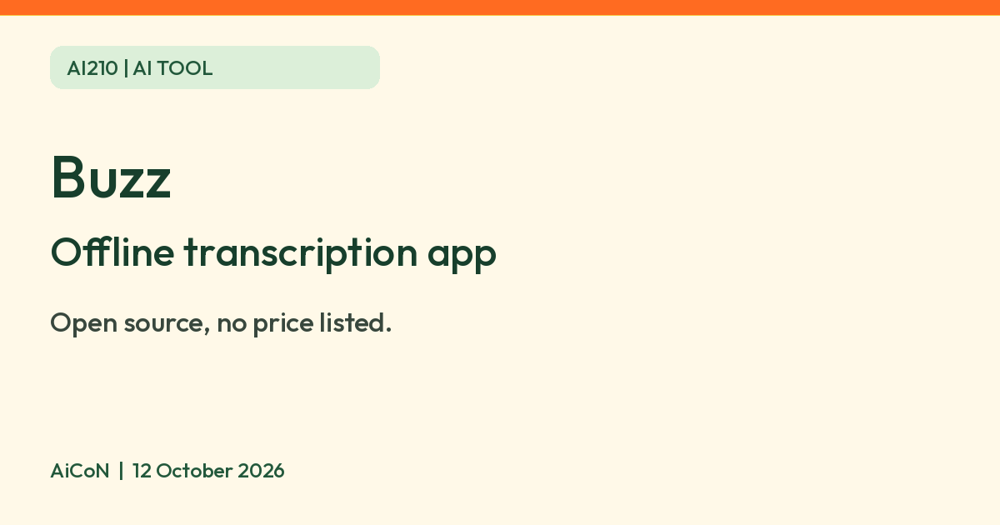

Buzz: open-source app that transcribes and translates audio on your own computer
Buzz says it transcribes and translates audio offline on your own computer. It is open source under the MIT licence, and its pages list no price.

What it is
Buzz is a desktop app that turns speech in audio or video files into text, and can translate it. Its GitHub page says it works offline on your own computer and is powered by OpenAI's Whisper models. It runs on Mac, Windows and Linux.
Is it free?
As far as its official pages show, yes. Buzz is open source under the MIT licence, and its GitHub page and documentation list no price, plan or subscription. We did not find an outright "free" line, so this is our reading of the open-source licence, not a verified price promise. Optional remote API services are separate; their prices and billing were not checked.
What it can do
- Import audio or video files, or YouTube links, and export the text as TXT, SRT or VTT subtitle files.
- Live transcription from your microphone. The docs say this is resource-intensive and may not be real-time.
- Speaker identification, and speech separation before transcribing noisy audio.
- A transcript viewer with search and playback controls, and a command-line option.
What your computer needs
- Mac: the GitHub page says Buzz now requires Apple silicon. Intel Macs are only supported up to version 1.4.5.
- Windows: the install files come from SourceForge. The page says the app is not signed, so Windows shows a warning and you pick "More info" then "Run anyway". AiCoN advice: only download it from the links on Buzz's own GitHub page.
- Linux: Flatpak, Snap or AppImage.
- The FAQ says the CPU needs AVX2 support and very old computers are not supported.
- Buzz does not state minimum memory or storage on the pages we read, so we are not giving numbers.
How to try a file
- Get the installer through Buzz's official GitHub links, matching your computer.
- Prepare a local speech model before relying on offline use. Avoid API options if the audio must stay on your computer.
- Choose File → Import Media File or the + icon, then select an audio or video file.
- Choose task, language and model settings, then Run. The docs recommend choosing the language rather than relying on automatic detection.
- When the status is Completed, double-click the row to view the transcript. Check it for mistakes and choose TXT, SRT or VTT for export.
Privacy
- Buzz says it transcribes offline on your computer.
- The docs also list an option to use the OpenAI Whisper API and "OpenAI API compatible" translation. If you switch those on, audio or text would go to that service. Check the setting you choose before using private recordings.
- We did not find a data-collection statement on Buzz's pages.
India
Buzz is a downloadable open-source app and its pages name no country limits. Buzz does not publish an India-specific statement, so we cannot confirm India availability from an official page. Check that the download works for you.
Frequently asked questions
Does it need internet?
Offline use needs the model files already on the computer. The FAQ says you can download models on an internet-connected computer and copy their folder to an offline computer. Help → Preferences → Models lets you download models and find their location. We did not test automatic first-use downloads.
Is it a meeting recorder?
It transcribes files and microphone input. The FAQ also explains that system audio needs a virtual audio device configured as the input. It is not a one-click meeting service. AiCoN advice: get permission before recording other people.
Will it work on an Intel Mac?
Only the older version 1.4.5, says its GitHub page.
What changed since this post?
Repository, docs, releases, FAQ, file-import and preferences pages checked on 12 October 2026. FAQ resolves the model-preparation question and adds system-audio setup and AVX2 requirements. Main-branch docs can describe features newer than an installed release; match them to your version. Release asset loading showed an error, so download files were not tested. No installation, transcription, translation, India download or data-collection test performed.
Sources: Buzz on GitHub, Buzz documentation, Buzz releases, FAQ, file import, preferences. Checked 12 October 2026.